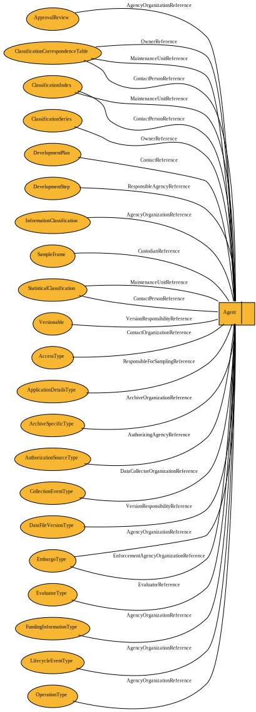

Agent
Base class for Individual and Organization. This allows strongly typed references.
Properties
This type contains no properties.
Properties Inherited from Versionable
Name |
Type |
Description |
|
|---|---|---|---|
URN |
1..1 |
||
Agency |
1..1 |
||
ID |
1..1 |
||
Version |
1..1 |
||
UserID |
0..n |
Allows for the specification of identifiers other than the specified DDI identification of the object. This may be a legacy ID from DDI-C, a system specific ID such as for a database or registry, or a non-DDI unique identifier. As the identifier is specific to a system the system must be identified with the UserID structure. |
|
UserAttributePair |
0..n |
A system specific user defined property of the object expressed as a key/value pair. As this is specific to an individual system the use of controlled vocabularies for the key is strongly recommended. |
|
VersionResponsibility |
0..1 |
Person or organization within the MaintenanceAgency responsible for the version change. If it is important to retain the affiliation between and individual responsible for the version and his/her agency, it may be included in this notation. This is primarily intended for internal use. |
|
VersionResponsibilityReference |
0..1 |
Reference person or organization within the MaintenanceAgency responsible for the version change, as described in an OrganizationScheme. If it is important to retain the affiliation between and individual responsible for the version and his/her agency, a Relation should be created between the individual referenced here and his/her organization. This is primarily intended for internal use. |
|
VersionRationale |
0..1 |
Textual description of the rationale/purpose for the version change and a coded value to provide an internal processing flag within and organization or system. Note that versioning can only take place on objects owned by the specified DDI Agency. If you are creating a local instance of an object from another agency for current or future modification use BasedOnObject. If the changes being made result in what you determine to be new object rather than a version of a previous object, i.e. the change is too extensive to consider it a version of the existing object, create a new object and use BasedOnObject to provide a link to the object or objects that were a basis for the new object. |
|
BasedOnObject |
0..1 |
Use when creating an object that is based on an existing object or objects that are managed by a different agency or when the new object is NOT simply a version change but you wish to maintain a reference to the object that served as a basis for the new object. BasedOnObject may contain references to any number of objects which serve as a basis for this object, a BasedOnRationalDescription of how the content of the referenced object was incorporated or altered, and a BasedOnRationalCode to allow for specific typing of the BasedOnReference according to an external controlled vocabulary. |
|
RelatedOtherMaterialReference |
0..n |
The inclusion of an existing OtherMaterial by reference. Use for any type of OtherMaterial not specifically addressed by an inline description for such as ExternalAid in QuestionItem. |
|
VersionDate |
0..1 |
Date of version using the union set BaseDateType. Duration should not be used in this field, even though allowed by the ISO format enforced by the parser. |
|
IsPublished |
0..1 |
Indicates that the maintainable will not be changed without versioning, and is a stable target for referencing. |
Item Type Hierarchy
Relationships
The following identified item types reference this type.
Item Type |
Property |
|---|---|
ReviewObjectReference |
|
ArchiveSpecific/ArchiveOrganizationReference |
|
OwnerReference |
|
MaintenanceUnitReference |
|
OwnerReference |
|
CollectionEvent/DataCollectorOrganizationReference |
|
ContactReference |
|
ResponsibleAgencyReference |
|
ItemMap/SourceItemReference |
|
AuthorizationSource/AuthorizingAgencyReference |
|
AgencyOrganizationReference |
|
LocalAddedContent/ContentLinkingMap/LinkingMap/LocalObjectReference_Versionable |
|
Note/Relationship/RelatedToReference_Versionable |
|
Relationship/RelatedToReference_Versionable |
|
DataFileVersion/VersionResponsibilityReference |
|
ControlOperation/AgencyOrganizationReference |
|
AuthorizationSource/AuthorizingAgencyReference |
|
ApplicationDetails/ResponsibleForSamplingReference |
|
CustodianReference |
|
MaintenanceUnitReference |
|
AuthorizationSource/AuthorizingAgencyReference |
|
EmbargoReference/AgencyOrganizationReference |
|
VersionResponsibilityReference |
